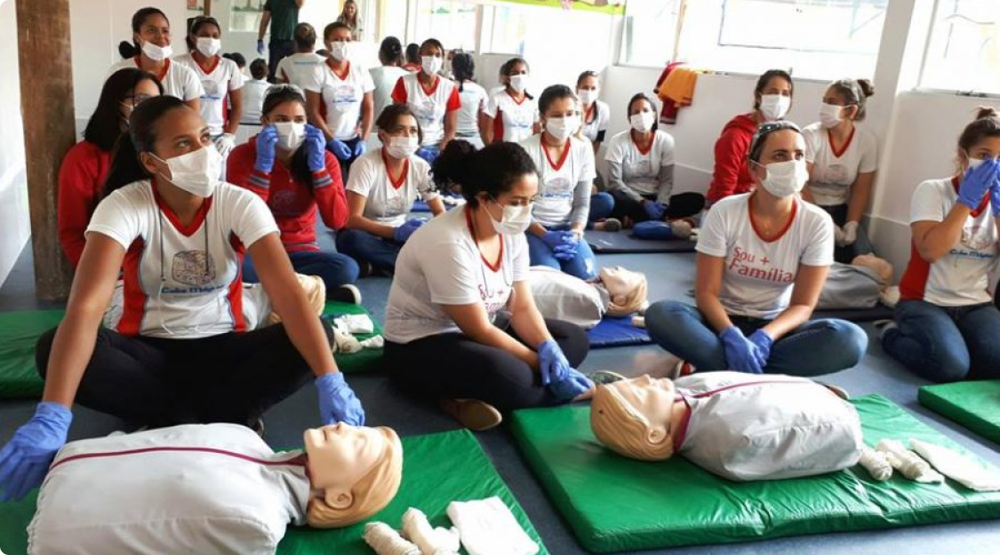
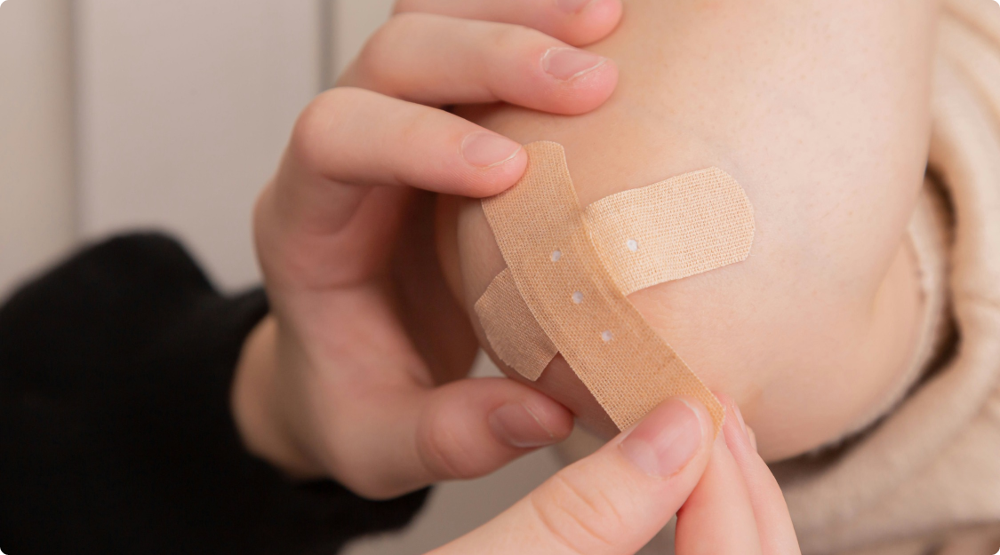
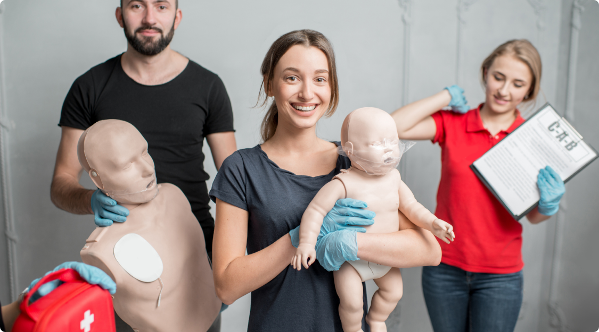
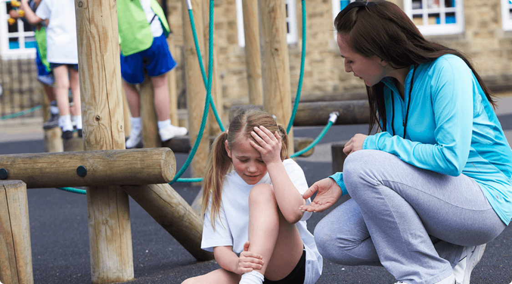

Inclusão da disciplina de primeiros socorros no ensino básico
Este trabalho objetiva identificar a necessidade da disciplina de primeiros socorros para alunos do ensino básico, como também analisar problemas e vantagens da inclusão, a partir das produções científicas contidas na BVS, Scielo e periódicos referentes a primeiros socorros e educação em saúde para leigos. Trata-se de um estudo descritivo, exploratório, do tipo revisão bibliográfica, de abordagem qualitativa da literatura disponível em bibliotecas virtuais.
Foram consultados artigos publicados entre 2005 a 2014 nas bases de dados disponíveis on-line gratuitamente, fizeram restrições aos idiomas espanhol e inglês. Utilizando-se a partir daí uma construção de 17 artigos, 1 tese e 2 manuais. Obtiveram-se como resultado três tópicos:
- O desconhecimento sobre Suporte Básico de Vida,
- O conteúdo dos primeiros socorros é fundamental. A população leiga normalmente é a primeira a identificar problemas.
- Leigos podem ser treinados. Portanto a prática dessa disciplina é de suma importância, pois, se evidencia pela necessidade que surge do crescente número de acidentes em locais públicos, e mais de 50% dos casos são presenciados por adolescentes ou crianças.
Descritores: Primeiros socorros. Ensino. Recuperação Cardiopulmonar. Emergência. Educação em saúde.
https://dialnet.unirioja.es/servlet/articulo?codigo=6772013Primeiros socorros nas escolas: como preparar professores para lidar com emergências
No ambiente escolar, a frequência de acidentes, especialmente envolvendo alunos, tem aumentado, destacando a importância dos primeiros socorros nas escolas. Dados da ONG Criança Segura mostram que acidentes são a principal causa de morte de crianças de 01 a 14 anos no Brasil, muitos dos quais poderiam ser evitados com prevenção ou pronto atendimento por pessoas capacitadas.
A Lei Lucas, criada após a tragédia de um aluno que faleceu ao engasgar durante um passeio escolar, tornou obrigatória a capacitação de professores e funcionários em primeiros socorros, sendo uma medida crucial na prevenção de acidentes escolares.
A importância do preparo adequado de professores e funcionários é evidente diante dessas situações. Este artigo aborda informações essenciais sobre kits de primeiros socorros, números de emergência e equipamentos úteis, além de oferecer orientações para lidar com diversas situações de emergência, como sangramento nasal, intoxicação, engasgos, convulsões, paradas cardíacas e desmaios, entre outros acidentes possíveis.
O que precisa ter no kit de primeiros socorros nas escolas?
Pode parecer, mas essa não é uma pergunta tão simples assim.
Em quase todo lar ou escola brasileira é possível encontrar um kit de primeiros socorros, mas eles realmente estão completos?
Na dúvida, o primeiro ponto é se certificar que o kit esteja em um lugar seguro, para o acesso rápido de adultos. E se ele compreende uma diversidades de materiais para o maior número de possíveis situações e acidentes.
Por isso selecionamentos abaixo uma lista completa de itens importantes para um kit de primeiros socorros nas escolas:
https://cmosdrake.com.br/blog/primeiros-socorros-nas-escolas-como-preparar-professores-para-lidarcom-emergencias/
A importância dos primeiros socorros na escola
Situações simples, como brincar com os colegas no pátio da escola ou comer um lanche na cantina, podem resultar em acidentes graves envolvendo crianças e adolescentes. Isso inclui quedas, fraturas e asfixia por engasgo, por exemplo.
Por essas e outras razões, profissionais que trabalham em escolas precisam conhecer técnicas de primeiros socorros. Afinal de contas, elas são indispensáveis em momentos de emergência, quando você precisa agir de forma rápida enquanto espera o atendimento médico especializado.
Contudo, apesar de parecer algo óbvio, grande parte da população não conhece procedimentos básicos de salvamento. E isso no ambiente escolar é bastante perigoso, pois esse é um espaço onde o risco de acidentes é extremamente alto.
As principais causas de acidentes escolares
A organização não-governamental Criança Segura analisou os dados do Ministério da Saúde entre os anos de 2011 e 2017 e identificou qual são as principais causas de acidentes envolvendo crianças e adolescentes no Brasil
De acordo com a pesquisa, mais de 40 mil morreram, dentro do período indicado, por conta de afogamento, sufocamento, intoxicação e quedas. Ao mesmo tempo, o número de hospitalizações pelas mesmas causas atingiu quase 680 mil pessoas na faixa etária de 0 a 14 anos.
No caso específico dos acidentes escolares, eles são responsáveis por grande parte do montante citado. Afinal, os colégios abrigam muitas crianças e adolescentes, público que, por natureza, é mais agitado, distraído e imaturo. Isso significa que, quando estão juntos, têm uma propensão maior de se colocarem em situações de risco.
Aliado a essa questão, está o fato de muitos dos prédios das escolas serem antigos e terem uma estrutura física que aumenta o risco de acidentes. O que engloba escadas, pisos escorregadios, canaletas sem proteção, brinquedos sem manutenção etc.
Diante de todo esse cenário, um estudo feito no estado do Paraná, identificou como as maiores causas de acidentes dentro do espaço escolar:
https://www.educamundo.com.br/blog/primeiros-socorros-escola

Os acidentes representam uma causa crescente de morte e invalidez entre crianças e adolescentes, sendo responsáveis por mais de 70% das mortes em adolescentes de 10 a 14 anos devido a causas externas. Anualmente, esses acidentes resultam em quase 6.000 mortes e mais de 140.000 hospitalizações em crianças com menos de 14 anos na rede pública de saúde. A percepção errônea dos acidentes como eventos imprevisíveis e inevitáveis impede seu controle efetivo, quando na realidade possuem causas, origens e determinantes epidemiológicos como qualquer outra doença, podendo ser prevenidos e controlados.
A matriz de Haddon facilita a análise dos diferentes tipos de lesões, permitindo a formulação de estratégias de intervenção mais eficazes. É essencial reconhecer que todo acidente é causado por um agente externo e um desequilíbrio entre o indivíduo e seu ambiente. Atualmente, a ciência do controle de acidentes, baseada em epidemiologia, biomecânica e comportamento, oferece estratégias preventivas mais eficientes, combatendo desinformação e promovendo a segurança na comunidade. Todo acidente (injúria não intencional) é causado por um agente externo, ao lado de um desequilíbrio que ocorre entre o indivíduo e o seu ambiente, o que permite que certa quantidade de energia seja transferida do ambiente para o indivíduo, capaz de causar dano. A energia transferida pode ser mecânica (quedas e trombadas), térmica (queimaduras), elétrica (choques) ou química (envenenamentos).
No ambiente escolar, é importante considerar os diferentes tipos de acidentes de acordo com a idade e estágio de desenvolvimento das crianças e adolescentes. Além dos acidentes físicos, a agressividade entre alunos, conhecida como bullying, também requer atenção, pois pode resultar em ferimentos e lesões. As habilidades motoras em desenvolvimento e a influência dos pares aumentam os riscos, destacando a necessidade de medidas preventivas como educação, modificações ambientais e legislação eficaz para garantir a segurança e reduzir as lesões evitáveis.
Lei Lucas
A Lei Lucas (Lei Federal nº 13.722), sancionada em 2018, surgiu em resposta à tragédia de Lucas Begalli, uma criança de 10 anos que faleceu em uma excursão escolar devido a asfixia mecânica por engasgamento. A lei torna obrigatória a aplicação de cursos de primeiros socorros para professores e funcionários de escolas de ensino infantil e básico, tanto públicas quanto privadas, visando prepará-los para lidar com situações emergenciais envolvendo estudantes.
A história de Lucas Begalli sensibilizou sua mãe, Alessandra, a lutar pela criação dessa lei para evitar que outras crianças enfrentassem o mesmo destino. A lei estabelece que as escolas devem oferecer cursos periódicos de primeiros socorros, sob pena de sanções que incluem multas e até mesmo a cassação de alvarás.
O objetivo da Lei Lucas é garantir que todos na escola estejam aptos a agir de maneira eficaz nos primeiros momentos de uma emergência até que a assistência médica especializada chegue, reduzindo assim o risco de fatalidades por falta de intervenção imediata.
https://cmosdrake.com.br/blog/lei-lucas-conheca-a-historia-por-detras-da-lei/